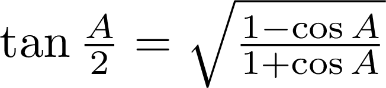

First let us express tan(θ/2) in terms of cosine of θ:
Taking for example the angle A of a triangle,

Substituting the cosine formula,
Simplifying,
Observe the symmetry of the formula:
Thus collecting formulae for all three angles,